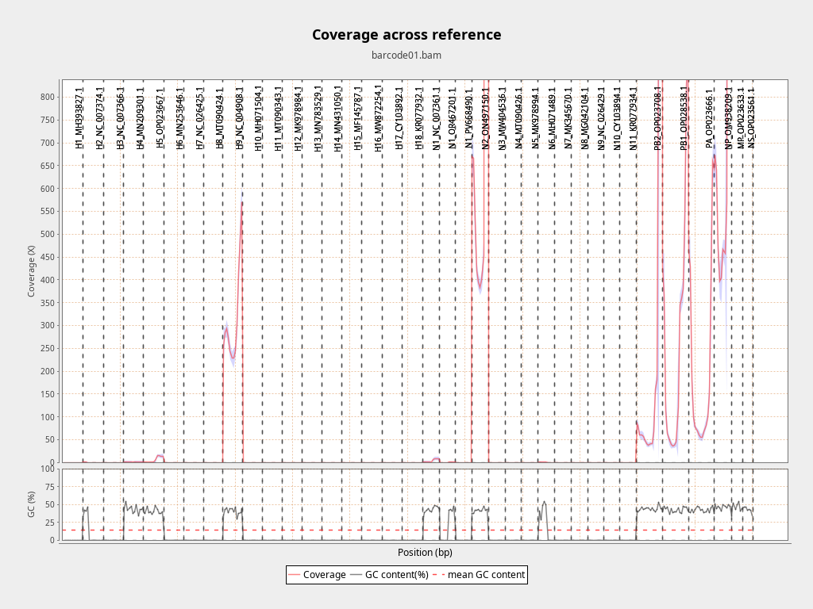

| Parameter | Value |
|---|---|
| Minimum Coverage Threshold | 100 |
| Degeneracy Threshold | 20% |
| Ploidy | 2 |
| Filter Mode | influenza |
| Variant Call Depth | 10000 |
| Basecall Model / Tier | hac |
| Variant-calling Profile | ont (indel calling off, -I)
|
| Base Quality (-Q / --max-BQ) | -Q 5 / --max-BQ 30 from basecall tier |
| Variant Call Mode | c |
| Indel Insertions Rule | equal_or_more |
| Indel Deletions Rule | equal_or_more |
| Qualimap Enabled | Yes |
| NanoPlot Enabled | Yes |
| Item | Path / Value |
|---|---|
| Barcode directory | fastq_pass/barcode01/ |
| Reference FASTA | ./reference/infA_references.fasta |
| Run start | 2026-08-31T14:38:54Z |
| Run end | 2026-08-31T14:43:37Z |
| Elapsed time | 00h:04m:43s |
| Report generated | 2026-09-02 18:01:53 |
Coverage across genome (23 zero-coverage contigs hidden)
| Name | Length (bp) | Mapped bases | Mean coverage | Std |
|---|---|---|---|---|
| H2_NC_007374.1 | 1,773 | 395 | 0.22 | 0.41 |
| H4_MN209301.1 | 1,713 | 3,349 | 1.96 | 0.26 |
| H5_OP023667.1 | 1,751 | 10,501 | 6.00 | 6.25 |
| H9_NC_004908.1 | 1,714 | 545,322 | 318.16 | 108.50 |
| N1_NC_007361.1 | 1,458 | 6,776 | 4.65 | 3.40 |
| N1_OR467201.1 | 1,371 | 548 | 0.40 | 0.49 |
| N2_ON497150.1 | 1,439 | 3,250,734 | 2259.02 | 3289.77 |
| N6_MH071489.1 | 1,452 | 739 | 0.51 | 0.50 |
| PB2_OP023708.1 | 2,292 | 1,563,721 | 682.25 | 1602.58 |
| PB1_OP028538.1 | 2,289 | 631,539 | 275.90 | 267.68 |
| PA_OP023666.1 | 2,176 | 407,015 | 187.05 | 186.91 |
| NP_OM938209.1 | 1,540 | 1,879,658 | 1220.56 | 1288.52 |
| MP_OP023633.1 | 1,002 | 3,049,501 | 3043.41 | 896.87 |
| NS_OP023561.1 | 865 | 3,402,776 | 3933.85 | 290.70 |
Coverage across reference

| Reference | Length (bp) | Mapped reads (primary) | % of mapped |
|---|---|---|---|
| N2_ON497150.1 Dominant NA | 1,439 | 9,305 | 27.9% |
| PB2_OP023708.1 | 2,292 | 5,727 | 17.2% |
| NS_OP023561.1 | 865 | 5,334 | 16.0% |
| MP_OP023633.1 | 1,002 | 5,243 | 15.7% |
| NP_OM938209.1 | 1,540 | 4,282 | 12.9% |
| PB1_OP028538.1 | 2,289 | 1,430 | 4.3% |
| PA_OP023666.1 | 2,176 | 1,203 | 3.6% |
| H9_NC_004908.1 Dominant HA | 1,714 | 754 | 2.3% |
| H5_OP023667.1 | 1,751 | 15 | 0.0% |
| N1_NC_007361.1 | 1,458 | 9 | 0.0% |
| H4_MN209301.1 | 1,713 | 2 | 0.0% |
| H2_NC_007374.1 | 1,773 | 1 | 0.0% |
| N1_OR467201.1 | 1,371 | 1 | 0.0% |
| N6_MH071489.1 | 1,452 | 1 | 0.0% |
| H1_MH393827.1 | 1,777 | 0 | 0.0% |
| H3_NC_007366.1 | 1,762 | 0 | 0.0% |
| H6_MN253646.1 | 1,744 | 0 | 0.0% |
| H7_NC_026425.1 | 1,708 | 0 | 0.0% |
| H8_MT090424.1 | 1,718 | 0 | 0.0% |
| H10_MH071504.1 | 1,703 | 0 | 0.0% |
| H11_MT090343.1 | 1,735 | 0 | 0.0% |
| H12_MK978984.1 | 1,727 | 0 | 0.0% |
| H13_MN783529.1 | 1,717 | 0 | 0.0% |
| H14_MN431050.1 | 1,707 | 0 | 0.0% |
| H15_MF145787.1 | 1,762 | 0 | 0.0% |
| H16_MW872254.1 | 1,758 | 0 | 0.0% |
| H17_CY103892.1 | 1,784 | 0 | 0.0% |
| H18_KR077932.1 | 1,769 | 0 | 0.0% |
| N1_PV668490.1 | 1,438 | 0 | 0.0% |
| N3_MW404536.1 | 1,452 | 0 | 0.0% |
| N4_MT090426.1 | 1,437 | 0 | 0.0% |
| N5_MK978994.1 | 1,452 | 0 | 0.0% |
| N7_MK345670.1 | 1,433 | 0 | 0.0% |
| N8_MG042104.1 | 1,435 | 0 | 0.0% |
| N9_NC_026429.1 | 1,398 | 0 | 0.0% |
| N10_CY103894.1 | 1,390 | 0 | 0.0% |
| N11_KR077934.1 | 1,416 | 0 | 0.0% |
Reads that did not map to any reference: 5,766 (14.8% of all reads). A high value means the reference panel may be the wrong organism or the sample is dominated by off-target material.
Selection rule: dominant HA = H* segment with highest mapped read count; dominant NA = N[0-9]*/NA* segment with highest mapped read count (from samtools idxstats).
| Reference | Positions | Zero-coverage | Breadth ≥ 1× | Mean depth |
|---|---|---|---|---|
| H2_NC_007374.1 | 1,773 | 1,387 | 21.8% | 0.2 |
| H4_MN209301.1 | 1,713 | 3 | 99.8% | 1.9 |
| H5_OP023667.1 | 1,751 | 11 | 99.4% | 5.9 |
| H9_NC_004908.1 | 1,714 | 0 | 100.0% | 311.9 |
| MP_OP023633.1 | 1,002 | 0 | 100.0% | 2989.8 |
| N1_NC_007361.1 | 1,458 | 5 | 99.7% | 4.6 |
| N1_OR467201.1 | 1,371 | 835 | 39.1% | 0.4 |
| N2_ON497150.1 | 1,439 | 0 | 100.0% | 2222.5 |
| N6_MH071489.1 | 1,452 | 727 | 49.9% | 0.5 |
| NP_OM938209.1 | 1,540 | 0 | 100.0% | 1196.3 |
| NS_OP023561.1 | 865 | 0 | 100.0% | 3862.8 |
| PA_OP023666.1 | 2,176 | 0 | 100.0% | 183.5 |
| PB1_OP028538.1 | 2,289 | 0 | 100.0% | 270.9 |
| PB2_OP023708.1 | 2,292 | 0 | 100.0% | 671.2 |
| Segment | Total Ambiguous | Resolved | Retained | Rate |
|---|---|---|---|---|
| H9_NC_004908.1 | 154 | 58 | 96 | 37.7% |
| N2_ON497150.1 | 72 | 70 | 2 | 97.2% |
| PB2_OP023708.1 | 67 | 11 | 56 | 16.4% |
| PB1_OP028538.1 | 92 | 18 | 74 | 19.6% |
| PA_OP023666.1 | 96 | 17 | 79 | 17.7% |
| MP_OP023633.1 | 11 | 11 | 0 | 100.0% |
| NP_OM938209.1 | 36 | 8 | 28 | 22.2% |
| NS_OP023561.1 | 28 | 27 | 1 | 96.4% |
No indel decisions recorded.
| Segment | Length (bp) | GC% (of ACGT) | N (no call) | IUPAC degenerate | Total ambiguous | Low confidence (lowercase) |
|---|---|---|---|---|---|---|
| barcode01_H9_NC_004908.1 | 1,714 | 40.2% | 0 | 96 | 96 | 0 (0.0%) |
| barcode01_N2_ON497150.1 | 1,439 | 41.5% | 0 | 2 | 2 | 0 (0.0%) |
| barcode01_PB2_OP023708.1 | 2,292 | 43.8% | 0 | 56 | 56 | 0 (0.0%) |
| barcode01_PB1_OP028538.1 | 2,289 | 42.0% | 0 | 74 | 74 | 0 (0.0%) |
| barcode01_PA_OP023666.1 | 2,176 | 42.3% | 0 | 79 | 79 | 0 (0.0%) |
| barcode01_MP_OP023633.1 | 1,002 | 47.4% | 0 | 0 | 0 | 0 (0.0%) |
| barcode01_NP_OM938209.1 | 1,540 | 46.5% | 0 | 28 | 28 | 0 (0.0%) |
| barcode01_NS_OP023561.1 | 865 | 42.8% | 0 | 1 | 1 | 0 (0.0%) |
0 of 13,317 bases (0.0%) are low-confidence - lowercase in the FASTA, meaning read depth below 3 or call quality below 10 at that position. This is the variant caller's own marking, preserved rather than discarded. Uppercase with seqtk seq -U if a downstream tool or archive requires it, and report this fraction alongside.
DeGenRESOLVE v1.0.0
Tool versions vs offline bundle: DIFFERS java: Picked up JAVA_TOOL_OPTIONS: -Djava.awt.headless=true vs bundled openjdk version 25.0.2-internal 2026-01-20
| Tool / Library | Version |
|---|---|
| NanoPlot | NanoPlot 1.47.2 |
| porechop | 0.2.4 |
| minimap2 | 2.31-r1302 |
| samtools | samtools 1.24 |
| qualimap | v.2.2.2-dev |
| bcftools | bcftools 1.24 |
| vcfutils.pl | bundled with bcftools 1.24 |
| seqtk | Version: 1.5-r133 |
| python | Python 3.10.21 |
| pysam | 0.24.0 |
| biopython | 1.88 |
| numpy | 2.2.6 |
| java | Picked up JAVA_TOOL_OPTIONS: -Djava.awt.headless=true |
| PyQt5 | 5.15.11 |
| os | Linux 6.14.0-37-generic x86_64 |